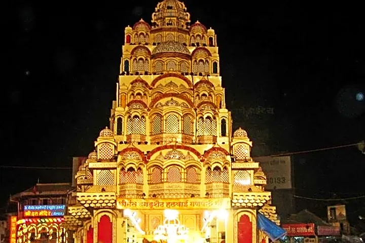
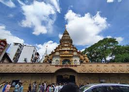
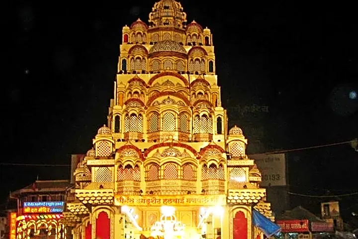
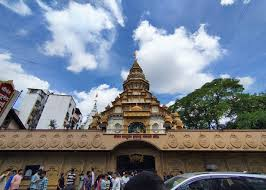

The Shreemant Dagdusheth Halwai Ganpati Temple is one of the most famous and revered religious landmarks in
Pune, Maharashtra. Established over 130 years ago, the temple was founded by Dagdusheth Halwai and his wife
Lakshmibai after they lost their only son during a plague epidemic. Seeking peace and strength, they
dedicated the temple to Lord Ganesha, who is worshipped as the remover of obstacles. Over time, the temple
gained immense popularity due to the faith and devotion of devotees.
The idol of Lord Ganesha at Dagdusheth Temple is known for its majestic appearance, adorned with gold
ornaments weighing several kilograms. During the Ganesh Chaturthi festival, the temple becomes the heart of
Pune’s celebrations, attracting thousands of devotees, celebrities, and political leaders from across the
country. The atmosphere during this period is filled with devotion, music, and cultural programs, making it
a truly grand experience.
 


